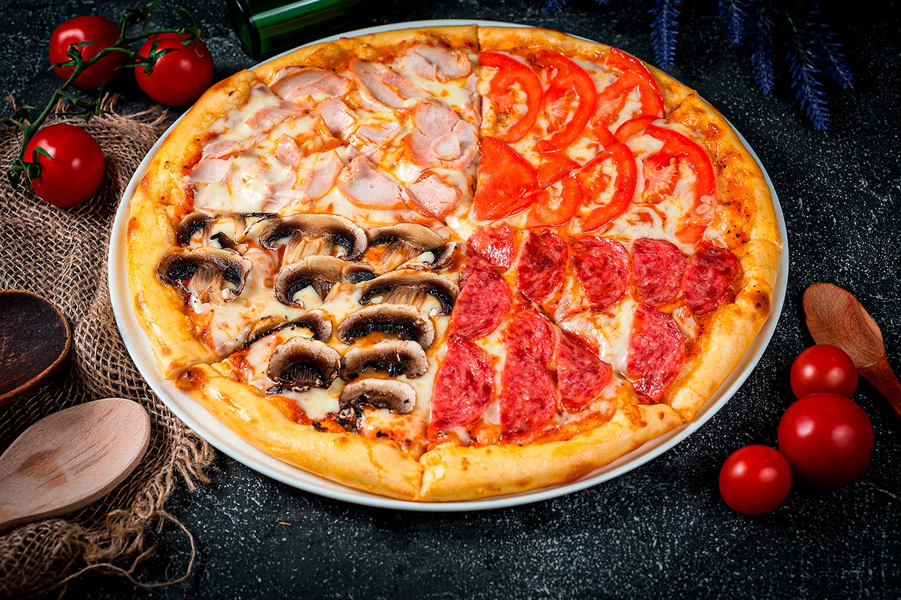
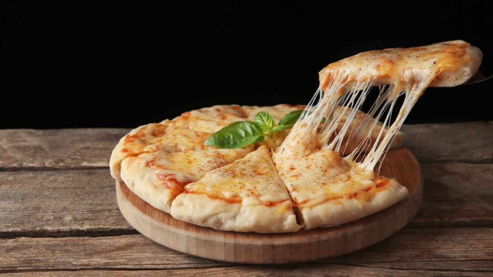
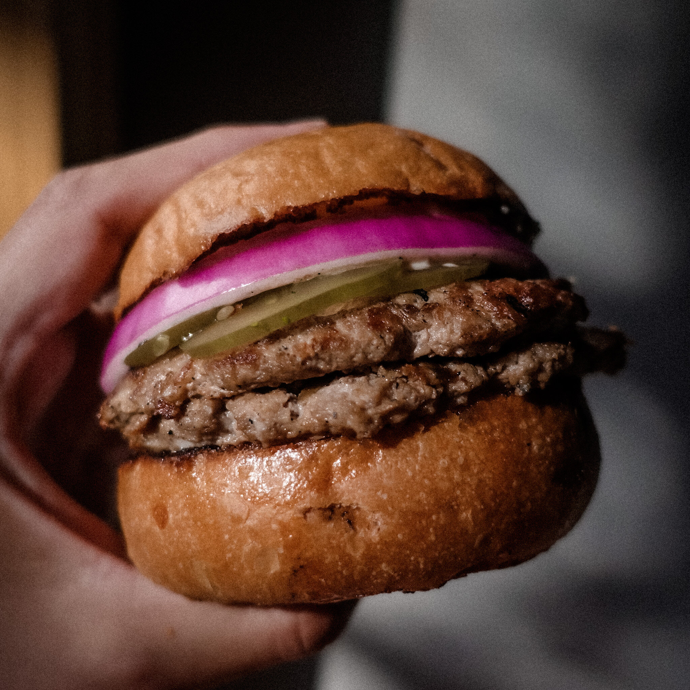
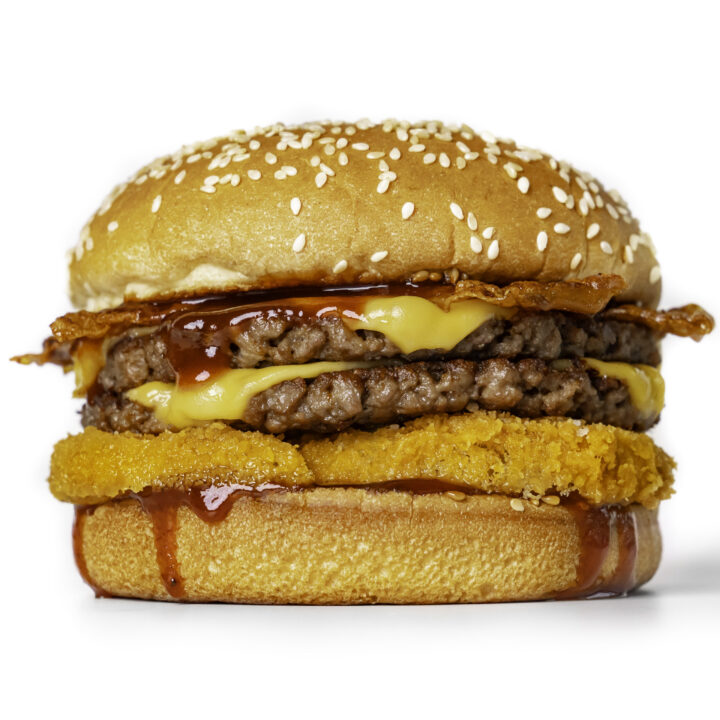
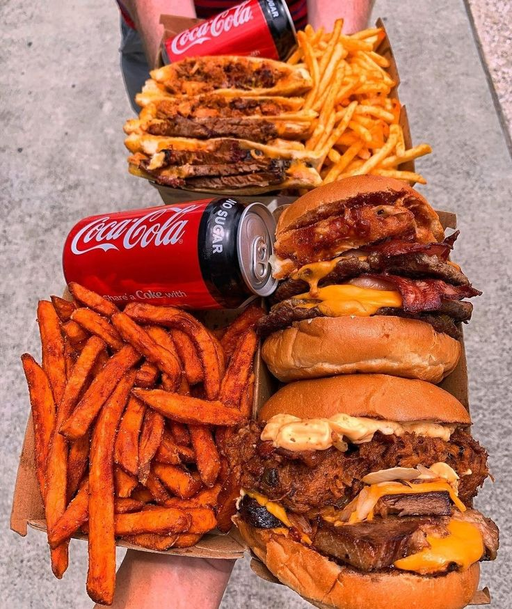
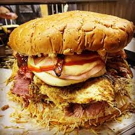
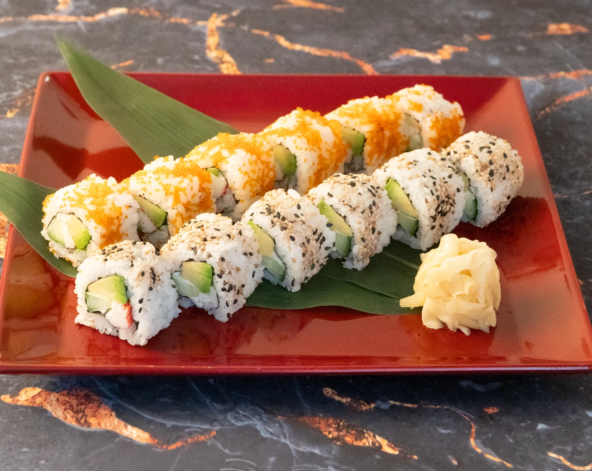
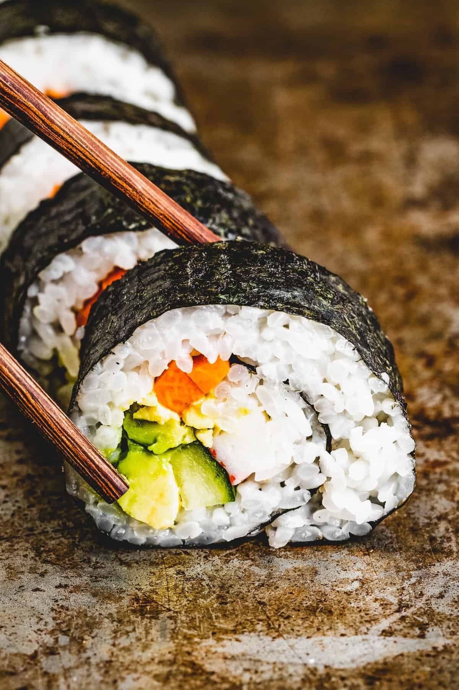
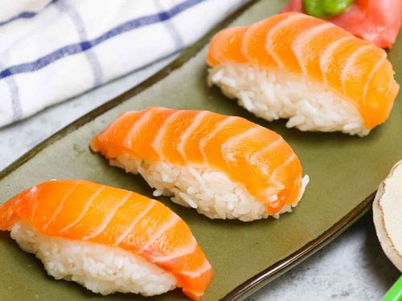
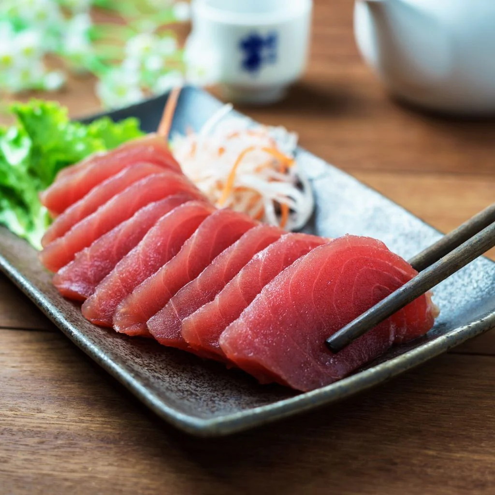

Margarita
Una pizza clásica con salsa de tomate, queso mozzarella y hojas de albahaca fresca.

Vegetariana
Una pizza con una variedad de verduras, como pimientos, cebolla, champiñones y aceitunas.

Cuatro Estaciones
Una pizza con cuatro secciones diferentes, cada una con ingredientes diferentes. Las secciones son: jamón, champiñones, alcachofas y aceitunas negras.

Cuatro Quesos
Una pizza con cuatro tipos diferentes de queso, como mozzarella, gorgonzola, roquefort y queso crema.

-
Burger
Hamburguesa sencilla con dos carnes de 150gr cada una, junto con vegetales y las salsas de la casa.
 -
Cheeseburger
Para los amantes del queso, esta hamburguesa es el paraiso. Aderezada con las salsas de la casa y sus respectivos vegetales, trae tambien queso y bacon, junto con ambas carnes de 200gr por unidad.
 -
Burger combo
Esta increible promocion trae 4 hamburguesas especiales (cheeseburger), junto con dos servicios de french fries, dos vasos de Coca-Cola y un refill de cada bebida. Este combo es ideal para parejas.
 -
Sombrero
La mejor hamburguesa para comer entre panas! Podras comerla solo? Esta hamburguesa viene con 1 kilo entero de carne molida de primera, salsas de la casa, vegetales, jamon y queso.

-
Uramaki
El uramaki es un rollo de sushi de tamaño mediano y cilíndrico. A diferencia de otros tipos de sushi, el arroz está en el exterior y el alga nori se encuentra en el interior.
 -
Maki
El maki es una pieza de sushi que consiste en una pequeña cantidad de arroz con vinagre envuelto en alga nori.
 -
Nigiri
El nigiri es una variedad de sushi que consiste en una pequeña porción de arroz de forma alargada, cubierta con pescado o mariscos. El arroz se moldea a mano y se coloca una fina capa de pescado o marisco encima.
 -
Sashimi
A diferencia de otros tipos de sushi, el sashimi no incluye arroz. Es una presentación de pescado o mariscos crudos, cortados en finas láminas y servidos sin ningún tipo de envoltura.
